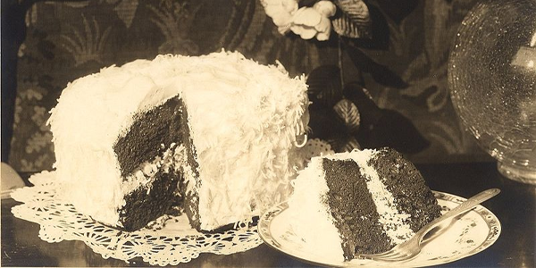

Famous Cakes in History (And How They’d Look in Cakelia)
Cakes have been at the center of major historical moments for centuries. From royal weddings to extravagant feasts, cakes have symbolized celebration, prosperity, and sometimes even rebellion! Today, we’re diving into some of the most famous cakes in history and imagining how they’d look if they were recreated with Cakelia’s interactive tools.
1. Marie Antoinette’s Extravagant Cakes
Marie Antoinette’s lavish cakes were the talk of the French court. Her famous statement, “Let them eat cake,” was immortalized by her opulent desserts. These cakes were so extravagant they were often adorned with elaborate sugar sculptures and flowers, making them works of art. Imagine recreating her cakes in Cakelia – towering layers of delicate ruffles, pastel fondant, and sparkling sugar crystals.
With Cakelia’s interactive features, you could not only design her opulent cakes but also choose your own intricate details. Want to add a sugar-coated crown or mini replicas of Marie Antoinette’s wardrobe? The possibilities are endless!
2. The Royal Wedding Cake of 2011
The royal wedding cake of Prince William and Kate Middleton became an iconic piece of wedding history. Standing at over 8 feet tall, this 8-tiered masterpiece featured intricate lacework, delicate sugar flowers, and a traditional fruitcake base. With Cakelia, you could recreate this cake in stunning detail – all the lacework, all the royal elegance, and none of the hassle. Imagine adding interactive elements like a tiny prince and princess figurine that you can customize!
3. The "Cake for All Occasions" of History
History has seen cakes built for all kinds of occasions, from birthday cakes that made kids’ dreams come true to cakes used as rebellion tools (yes, seriously!). In Cakelia, you can design your cake for any historical period. Want a cake that resembles the ones from the Victorian era? Add intricate piping details, ruffles, and fondant-covered tiers that speak to a time of elegance.
Ready to Step Back in Time?
With Cakelia’s interactive features, you can bring history to life with your very own virtual cakes. Explore, create, and have fun with cake designs that span centuries. Who knows – maybe your cake will be the next one people talk about for years to come!